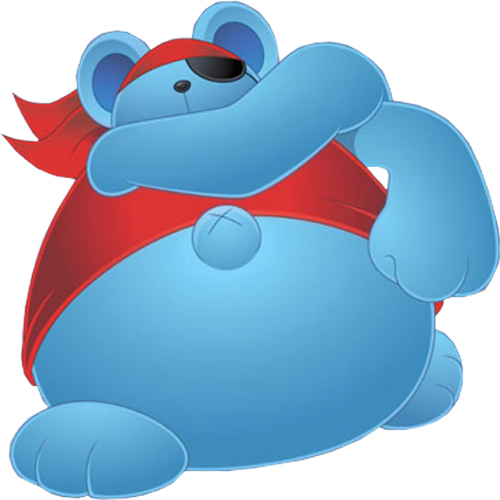

The leader of the Squeaks. Daroach attacks Kirby with magical powers. He also gets possessed by Dark Nebula towards the end of the game. He has his own page!
The Squeaks
NYC is for the rats (the Squeaks)
The Squeaks are a band of rats thieves consisting of Squeakers, Spinni, Storo, and Doc, as well as their leader, Daroach. Their goal is to steal all the treasure in Dream Land.

Story
After a member of the Squeaks steals Kirby's strawberry shortcake, Kirby chases the Squeaks through different worlds. Occasionally, the Squeaks ambush Kirby in an attempt to steal the treasure chests he has collected during his journey.
The Squeaks' leader, Daroach, is possessed by Dark Nebula. Daroach is freed after Kirby fights and defeats him.
After Kirby defeats Dark Nebula, Daroach and the Squeaks thank Kirby and return his strawberry shortcake.
Members
Learn who the members of the Squeaks are!
Daroach

Storo
The brawn of the group. Storo attacks with brute strength and his large hammer.

Spinni
The speed of the group. He wears a cape and throws shurikens at Kirby.
Doc
The brains of the group. He appears inside of a UFO. Doc is highly intelligent and was the one who built Mecha-Kracko and Yadogaine, two machines that Kirby has to fight.
Squeakers
The henchmen of the group. They are the smallest and weakest members of the Squeaks and aren't very dangerous, although some of them can throw bombs.